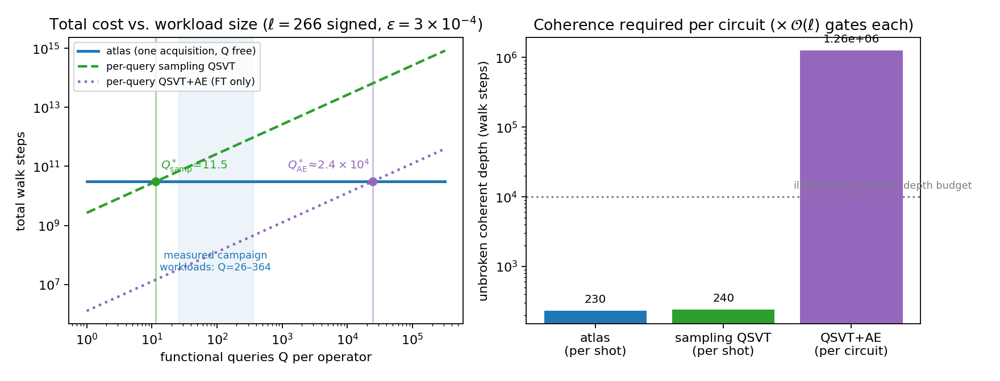

Preprint · July 2026
Quadratic Speedup, Query Amortization, and Shallow Circuits
Many questions about a network are really questions about its spectrum: a set of numbers that summarizes the network’s global shape, how tightly it is connected, how a random walk or a diffusing signal spreads across it, what its resistance curves and log-determinants are. For networks that are too large to ever write down (here, up to 22000 vertices, specified only by a generating rule) and for signed networks whose connections mix positive and negative weights, computing spectral quantities classically ranges from expensive to effectively impossible.
This paper’s protocol has a quantum computer make one short measurement pass per network and record a compact table of summary statistics, the atlas of the title. From that single table, ordinary classical post-processing then answers hundreds of different spectral questions at no further quantum cost, and every answer comes with its own internal consistency check.
Break-evenPays for itself against per-query quantum sampling at 12–35 queries per operator; past that the advantage grows linearly with workload (2–30× on this paper’s own 26–364-query workloads).Circuit depthRuns circuits ≈5,500× shallower than amplitude-estimation approaches require, which is what makes it a candidate workload for today’s pre-fault-tolerant processors.Signed operatorsWhere the best generic classical sampler’s cost multiplies by 1024–10111, the atlas’s cost and accuracy are unchanged; a signed operator on ≈1080 vertices yields its log-determinant to 2.9×10−14 nats.On hardwareTwo IBM Heron processors recover the protocol’s moment spectroscopy through order k = 8, with median resolvent-curve error 5.2% (signed) and 9.7% (unsigned).
We present a quantum protocol that acquires, in a single pass per operator, a multi-resolution atlas of Chebyshev moments of a resolvent-warped qubitized walk, from which large families of spectral functionals, resistance curves, traces of matrix functions, log-determinants, spectral densities, are subsequently obtained by classical post-processing at no additional quantum cost. We evaluate the protocol on explicit graphs (a 7,624-node social network and a designed stochastic block model), on implicitly specified product graphs with up to 22000 vertices, and on signed and magnetic operators, against independently computed ground truth throughout, with all accuracy criteria fixed prior to data collection. On implicit sign-free graphs the per-moment cost gap over the best generic classical sampler is quadratic in spectral resolution; on signed and magnetic operators the classical sampler’s cost multiplies by 1024–10111 at the required depth while the quantum cost and accuracy are unchanged, and a signed operator on ≈1080 vertices yields its combinatorial log-determinant to 2.9×10−14 nats. Against quantum alternatives, the atlas breaks even with per-query sampling methods at 12–35 queries per operator, past which its advantage grows linearly and without ceiling in workload size (2–30× across our own 26–364-query workloads; additional functionals cost no further quantum steps), and runs circuits ≈5,500× shallower than amplitude estimation requires, while ceding the single-query fault-tolerant limit by ≈2.4×104×; on explicit graphs classical solvers remain 103–105× faster. We prove worst-case hardness of the protocol’s elementary output by reduction from normalized-trace estimation, and construct a signed instance on which all known classical simulation routes are closed. These properties, one shallow-circuit acquisition serving hundreds of functionals, each answer carrying internal consistency diagnostics, identify multi-query spectral estimation on signed and implicitly specified operators as a concrete, verification-ready workload for pre-fault-tolerant quantum hardware, with prospective applications to frustrated lattice models and gauge fields beyond the reach of sign-problem-limited sampling, and to network analysis at generative scale. A two-processor hardware characterization on IBM Heron devices recovers the protocol’s moment spectroscopy through order k = 8 (median resolvent-curve error 5.2% signed, 9.7% unsigned) and measures the noise model assumed throughout. All validation instances are classically tractable by construction; no hardness of any executed instance is claimed.
expG/Explicit-graph experiments: LastFM social network (7,624 nodes) and a designed stochastic block model, with archived datasets.expG2/Leverage-weighted port-selection follow-up on the same instances.expH/Implicitly specified product graphs with up to 22000 vertices.expI/Signed and magnetic operators, with path-sampler baselines.expJ/Hardness construction and quantum-comparison cost tables.*.ipynbIBM hardware acquisition and analysis notebook; zero-QPU reanalysis script.@misc{ansari2026spectralatlases,
title = {Quantum Spectral Atlases for Exponentially Large Graphs:
Quadratic Speedup, Query Amortization, and Shallow Circuits},
author = {Ansari, Kamran},
year = {2026},
note = {arXiv preprint; identifier to be added}
}